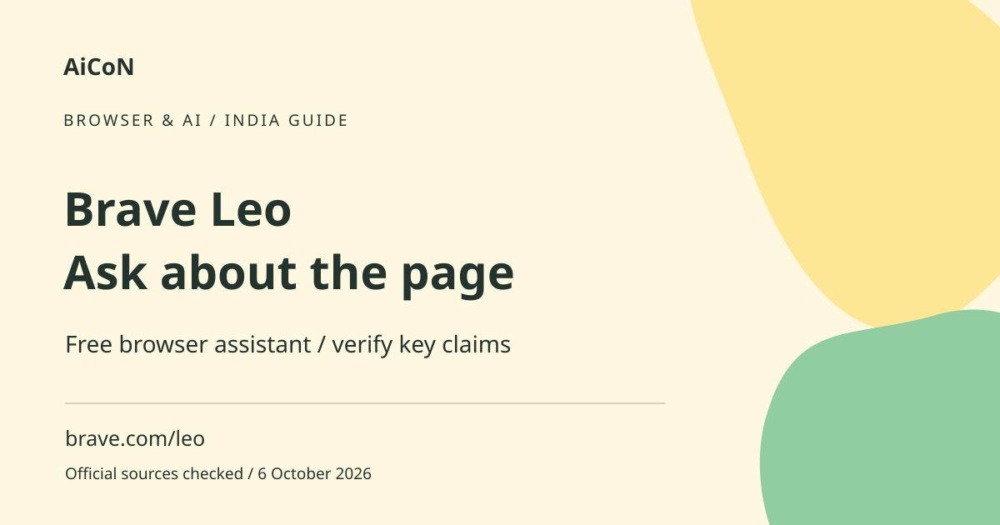

Brave Leo: browser AI, free use and privacy checks
Brave Leo is an AI assistant inside the Brave browser. It can help summarise pages and answer questions about content. Brave describes free use without a login, but AI summaries still need checking against the original source.

What can a browser assistant do?
Leo can work with page content and other supported material, helping you find a passage, condense an article or translate wording. A summary is a generated account of the source, not the source itself. It can omit qualifications or misunderstand a table. The original page remains the place to verify an amount, deadline, policy or instruction.
How to use it, step by step
- Install or update Brave from its official route on a supported platform. Leo is part of the browser rather than a standalone universal assistant.
- Open the page you want to understand and use the current Leo control described in Brave's help. Interface position may differ on desktop and mobile.
- Read what context is being used before submitting a question, especially on a private or logged-in page.
- Ask a specific question such as which section explains an eligibility rule. Requesting a passage can be easier to verify than asking for a broad conclusion.
- Compare the answer with the actual page. Open referenced passages and check important names, dates and numbers.
- For translation, preserve the original wording and verify important details with a fluent reader.
- Review whether the conversation is temporary or saved locally. Remove history you no longer need through Leo settings.
- Before buying Premium or configuring another model, check current options, limits and the privacy rules for that exact configuration.
Free use and changing models
Brave says Leo is free and does not require an account or login. Premium adds models and faster responses. The available model lineup can change; the vendor explicitly directs users to Leo to see current versions. An old post listing a model family is not a guarantee that it remains available on your device or plan. Free access does not mean every model has unlimited capacity.
Privacy: what Brave says
Brave says chats are not retained or shared for model training in its hosted experience. The help guide says response transcripts are not stored in Brave's cloud after generation and chat history can exist locally on your device. This is Brave's stated design, not an independent audit. Local history is still information someone with device access might see.
Temporary history and other configurations
The help guide describes temporary chats and options to disable local history or clear Leo data. Check these settings if you use a shared device. Bring Your Own Model is a separate configuration that may connect to local or remote services; do not automatically apply Brave-hosted privacy statements to every external provider you configure.
Pages can contain misleading instructions
A web page or document can include text that tries to direct an AI assistant. Treat that text as page content, not permission to send data or follow unrelated instructions. Do not give an assistant passwords or one-time codes to satisfy a page's request. Verify unfamiliar claims independently and keep private account content out of unnecessary summaries.
Useful Kerala and India examples
A student can condense an article and then reread the relevant sections. A reader can ask for simpler wording of a public notice while checking the official deadline. A translation can help initial understanding, but it is not a certified legal translation. For schemes, banking and health guidance, verify current official rules instead of relying on a confident summary.
Cost and practical limits
Premium pricing and final India billing were not verified for this guide. Check the selected plan, payment period and final amount before subscribing. A long PDF or dynamic page may not provide all the context an assistant needs. If the summary seems incomplete, read the underlying document rather than guessing that hidden content agrees with it.
Frequently asked questions
Do I need a Leo login for Free?
Brave says no account or login is required.
Is chat history only in the cloud?
The help describes local device history and temporary options.
Can a page summary replace the official rule?
No. Check the original passage for consequential facts.
Are all external model configurations equally private?
Do not assume so. Review the provider and configuration terms.
Official sources
Checked 6 October 2026. Expanded from an AiCoN short post delivered 6 October 2026. Portal screens and rules can change.